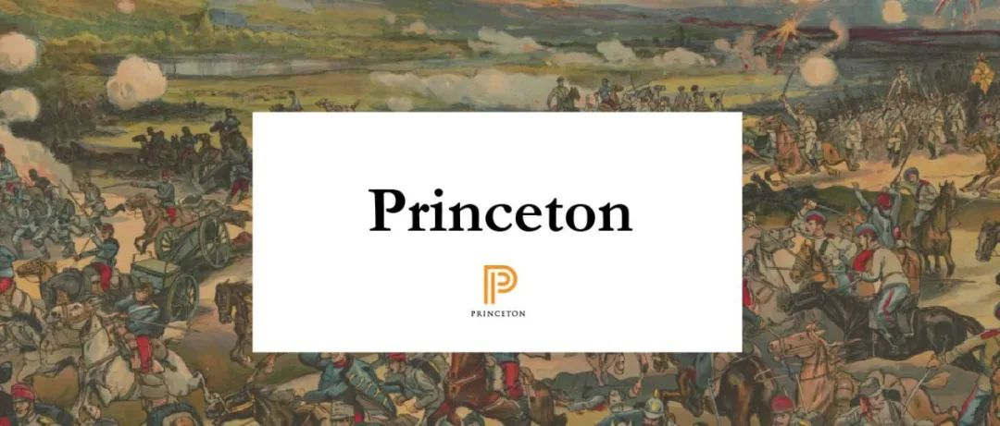
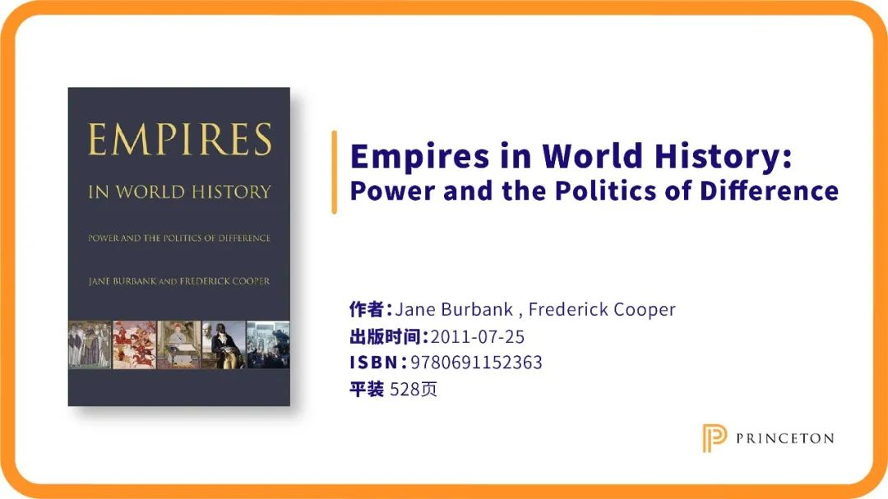
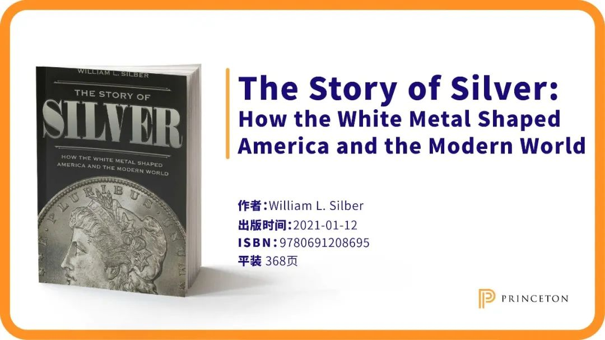
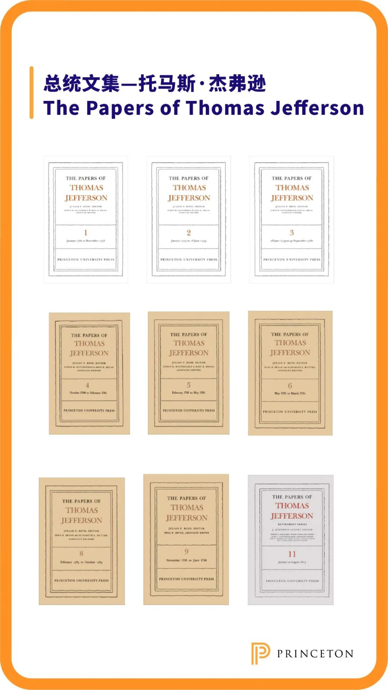
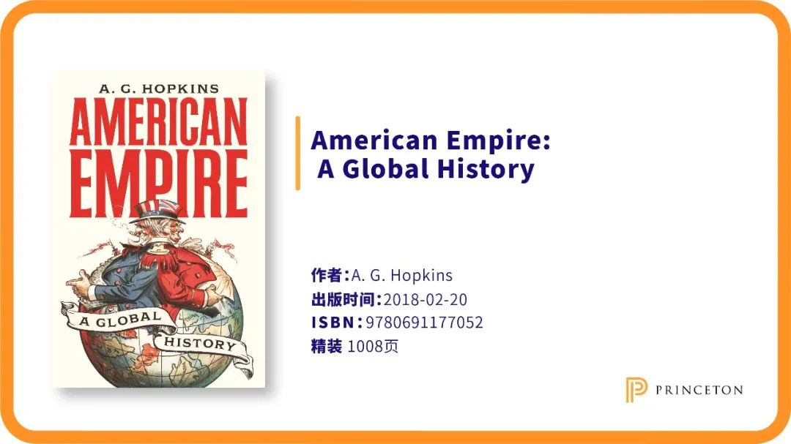
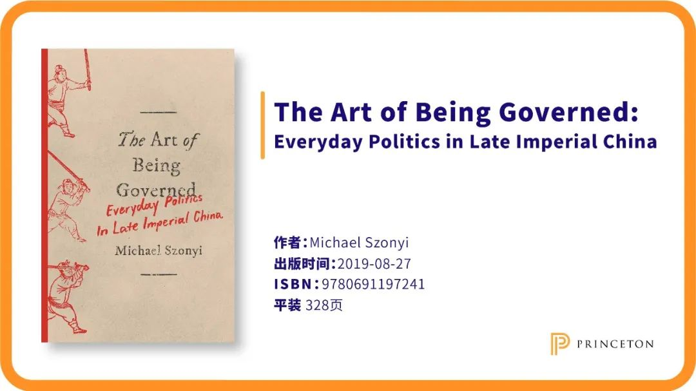
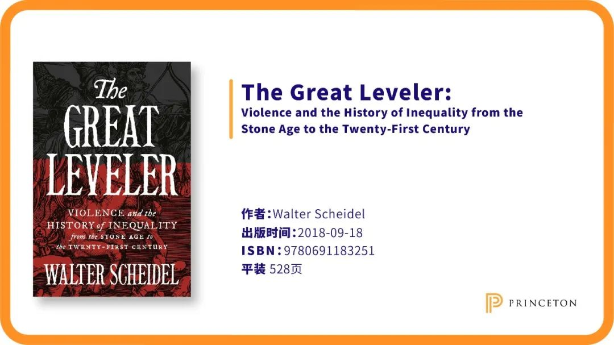

收录于合集
以下文章来源于普林斯顿读书汇 ，作者PUP China
 普林斯顿读书汇 .
普林斯顿读书汇 .
普林斯顿大学出版社 (Princeton University Press) 旗下唯一公众号。自1905年起，PUP已成为全球顶尖学术成果与思想的传播者。关注我们，获取最新英文书摘，领军学者访谈，作者讲座活动。
Editor’s Note
普林斯顿大学出版社（Princeton University Press, PUP）在历史领域的出版有着广泛的学术关切和严谨的学术思维。出版社长期放眼全球，追寻最震撼人心的研究主题和里程碑式的学术著作。
在一手文献上，PUP整理出版了丰富的史学资料，其中包含美国两任总统杰弗逊和威尔逊的文集、与旧约有关的古代近东文本等。这些历史文献的发掘、整理和出版为史学家们展开创新性研究提供了有力的原始资料。在史学著作的出版上，PUP的书籍涵盖了从欧美到亚非、从古代到现代、从政治史到科学史和环境史等多样的主题。PUP在美国现当代史的出版著作体现出历史学与社会学、国际关系、城市规划等多学科交叉的魅力，而在古代文明、宗教史和亚非历史等方面的作品则成为全球该领域学者的借鉴之作。在本期的历史学书单中，我们为大家呈现PUP史学出版的经典与前沿动态，共同回顾史学的核心关切。 本期所有书目均参与“年度学术福袋计划”，最高直减1500元，详见文末。
****全球史
点击下图直达本书购买页
Empires of the Weak: The Real Story of European Expansion and the Creation of the New World Order
是什么导致了欧洲的崛起、全球体系的建立和西方近代以来的主导地位？传统观点认为，西方先进的技术和军事优势促成了其在世界的领先地位。然而，本书作者认为，欧洲人在近代早期并不具备普遍的军事优势，欧洲的崛起和扩张实际上是源于当时大陆帝国对海上霸权的忽视，而陆地上强大的东方帝国才是现代早期的征服者。作者认为，19世纪末20世纪初的帝国主义在世界政治中只是一个短暂的存在，中国在21世纪的崛起将意味着现代世界秩序的回归。
The Gunpowder Age: China, Military Innovation, and the Rise of the West in World History
火药是中国的四大发明之一，然而到19世纪初，中国在火药技术的应用上却远远落后于西方，从而在鸦片战争中被英国打败。本书以火药武器为切入点，对中国与西欧在近代历史上迥然的发展路径进行了探讨。作者认为，近代中国的式微在于其享受了近一个世纪的相对和平，而历经近代战火的中国将重新回归强国行列。
本书荣获2017年军事史协会杰出著作奖。

Empires in World History: Power and the Politics of Difference
不同于以往专注于民族国家的学术专著，本书从帝国角度探索了帝国内部的多样性如何塑造了世界格局。作者简·伯班克（Jane Burbank）和弗雷德里克·库珀（Frederick Cooper）从古代中国与罗马帝国入手，在强调帝国如何协调自身的多元融合的基础上，探寻了包括拜占庭帝国、阿拉伯帝国、加洛林帝国、蒙古帝国和奥斯曼帝国等在内的帝国于全世界范围内的征服、竞争以及统治状况。这种从多样性出发研究帝国史的角度为读者理解帝国对于历史和当代的影响提供了新思路。
本书荣获2011年度世界史学会书籍奖。
点击下图直达本书购买页
The Transformation of the World: A Global History of the Nineteenth Century
作者Jürgen Osterhamme被誉为十九世纪布罗代尔。在本书中，他以多维全景视角聚焦转型中的世界，超越传统的欧洲中心论和年代论，向读者们呈现真正的全球历史，其范围之广、钻研之深令人叹为观止。从纽约到新德里，从拉丁美洲革命到太平天国叛乱，从跨大西洋劳动力市场的暗流涌动到世界游牧部落的沉重苦难，这部优秀的历史作品向我们全面展示了19世纪如何为20世纪的和平主义、自由主义、工会和其他一系列重要发展提供机遇。
点击下图直达本书购买页
Porcelain: A History from the Heart of Europe
本书作者、路易斯安那州立大学历史系教授Suzanne L. Marchand 追溯了瓷器行业三百年来的变幻命运。她将瓷器产业链上企业家、工匠、官员、化学家、消费者和小贩的故事交织在一起，叙述出瓷器从艺术奢侈品到家居必需品的变迁历史，映照出不同时代下欧洲社会商业模式、艺术品位和消费习惯的变化。
点击下图直达本书购买页
A Thirst for Empire: How Tea Shaped the Modern World
茶叶一直是世界上最受欢迎的商品之一。几个世纪以来，茶叶贸易的巨大利润资助了战争和殖民；茶叶的种植为土地使用、劳工体系、市场实践和社会等级带来了巨大的变化。本书以广博且深入的历史视角审视了遍布欧洲、亚洲、北美和非洲的茶叶产业，研究了这一历史进程对我们现代消费社会的塑造。
本书荣获2018年太平洋海岸英国研究会议最佳图书奖、美国历史学协会世界史领域Jerry Bentley奖 。

The Story of Silver: How the White Metal Shaped America and the Modern World
从十九世纪至今，白银经历了从流通货币到贵金属硬资产的转变。20世纪30年代，美国总统罗斯福通过抬高白银价格来重启大萧条下的美国经济。本书就向读者们叙述了近代以来波澜壮阔的白银金融史，并揭示了白银对21世纪政治经济的影响。
本书荣获《金融时报》2019年历史类最佳图书
点击下图直达本书购买页
A Local History of Global Capital: Jute and Peasant Life in the Bengal Delta
本书作者追溯了从19世纪英国殖民统治时期至20世纪印巴分治时期黄麻种植业形成的全球联系对当地农民生活方方面面起到的改变。作者指出，当19世纪的繁荣被20世纪的债务和贫穷所取代时，当地农民的生活随着全球商品市场的动荡而重组。本书探讨了黄麻产业是如何将孟加拉三角洲的农民与动荡的全球资本捆绑在一起，将全球大宗商品市场的影响带向农民的日常生活。
点击下图直达本书购买页
Empires of Vice: The Rise of Opium Prohibition across Southeast Asia
本书作者比较了英法两国殖民者在英属缅甸、马来亚和法属印度支那施政的异同。她指出，殖民地的鸦片禁令并非完全出自对“鸦片上瘾”的道德认识，而是来源于殖民地官僚体系内部更为复杂的机制。殖民地行政官员的日常工作促使鸦片税合法化，而其中的政治经济联结又催生了鸦片改革的可能性。
点击下图直达本书购买页
Red Meat Republic: A Hoof-to-Table History of How Beef Changed America
本书作者为人们展现了美国牛肉产业背后的历史故事：大农场主不断推进西进运动、肉类加工商为逐利而创造出工业化却极不卫生的屠宰场、纽约街头由食品引发的骚乱……本书叙述了在当时崛起的牛肉产业中谁在受益，而谁又在默默承担其沉重的代价。

****美国史
普林斯顿总统手稿文集系列
由普林斯顿大学出版社出版的 **“托马斯·杰弗逊文集 （The Papers of Thomas Jefferson）”**是一套52卷的丛书，包括美国第三任总统杰弗逊撰写的18000封信，以及杰弗逊关于政治哲学和科学农业主题的多种公开著作。这部套系始于1950年，由杰弗逊基金会赞助，普林斯顿大学资深历史学家James P. McClure担任编辑。

美国第28任总统伍德罗·威尔逊与普林斯顿大学出版社有着深远的渊源。普林斯顿 **“伍德罗·威尔逊文集 （The Papers of Woodrow Wilson）”**由世界上最杰出的威尔逊研究者、威尔逊传记作者、普林斯顿大学教授Arthur S. Link担任编辑，收录了了70卷威尔逊的文章作品，是威尔逊思想的纪实。
上述两套文集被美国各大高校图书馆及公共图书馆广泛收藏，是美国总统最全的手稿套系之一。
重磅套系
“普林斯顿美国现代政治与社会系列（Politics and Society in Modern America）” 是当代美国史研究的必读套系。这套内容广泛的书籍不仅汇聚了传统政治史的精华，还整合了社会文化史的见解和方法论。这一系列来自知名学者的作品对传统的美国历史分期模式提出了挑战，将美国近现代的政治经验置于比较研究的框架中，经典性与时代性兼备。
“普林斯顿美国全球史系列丛书（America in the World）” 聚焦于美国历史上的全球扩张。在这套书中，新一代学者从时间周期，方法论和分析领域出发，对超越民族国家的网络、身份和进程予以关注，并针对美国历史的多样主题，提供广泛的地理及概念界定分析。 **“普林斯顿美国政治史系列丛书 （Princeton Studies in American Politics）”**这套丛书囊括了有关美国政治的典范性书籍，这些作品的写作方式多样，但作为共性，它们都使用了史实证据。值得一提的是，该系列兼顾领域内知名专家和后起之秀，涵盖专业性和通识性两类书籍。
The Good Immigrants: How the Yellow Peril Becamethe Model Minority
作为2017年亚裔美国研究协会历史最佳书籍奖得主，本书颠覆传统理解方式，从中国精英的角度来讲述美国移民问题。作者聚焦一个世纪以来亚裔美国人的典型少数族裔特征，以贝聿铭等著名的中国移民者为研究对象，探讨了美国移民法及文化观的转变。作者表示，正是得益于这些历史变革，亚裔移民才得以在美定居，并逐渐发展为模范人才。
点击下图直达本书购买页
A Class by Herself: Protective Laws for Women Workers, 1890s-1990s 美国女性劳工保护的立法既是向现代劳动准则的进步，又是进一步追求权利平等的阻碍因素。本书的叙述跨越了整个二十世纪，探讨了最长工时法、最低工资法、夜间工作法等仅针对女性的保护性条例，追溯了这些国家律令在进步主义运动和新政中的兴起以及六七十年代女权主义者对这些法案单一性别属性的攻击。 本书荣获2016年康奈尔大学 Phillip Taft 劳工历史类图书奖、普林斯顿大学William G. Bowen 图书奖。

American Empire: A Global History
在跨越三个世纪的全面叙述中，作者运用自己在经济史和英欧帝国史方面的专业知识，带领读者从全球力量的角度理解美国历史。作品突破美国例外论这一传统观念，娓娓道来美国和西欧是如何走上相似的道路，以及美国对欧洲的依赖是如何延续至十九世纪。凭借其大胆创新的写作视角及精准严谨的史料分析，这部学术作品被评选为BBC历史杂志年度最佳图书之一。
The New Deal: A Global History
通过将20世纪30年代美国对国际资本主义和民主危机的反应与全球其他国家的反应进行比较，作者针对罗斯福新政带来崭新诠释。这部作品是第一部将罗斯福新政置于全球视角研究的著作，其研究广度遍及欧亚拉美，凝聚了作者对于全球史的深刻理解。
点击下图直达本书购买页
Southern Nation: Congress and White Supremacy after Reconstruction
本书探讨了从内战后重建到罗斯福新政时期，南方白人议员是如何对美国的公共政策和制度进行塑造的，并在此过程中按照他们自己的形象重塑了这个地区和这个国家。该书借鉴了有关南方地区立法的新理论，对重要史料及国会数据展开了深入分析。作者追溯了南方立法者们面对困境的方式，其既需要联邦投资又反对联邦对南方种族主义等级制度的干涉。他们此前采取了各种解决方式，但最终还是走向了白人至上的原则。
点击下图直达本书购买页
Racism: A Short History
围绕种族问题展开的话题一直是人们关注的焦点。本书从中世纪晚期入手，探究了数百年来随着欧洲殖民扩张与黑奴贸易而衍生出的愈发严重的种族问题。随后，作者首次尝试对比了19世纪美国针对有色人种的歧视以及同时期在德国出现的反犹太人情绪——即种族主义最重要的两个分支——从而揭示了二者间的异同。
本书荣获2003年Choice杰出学术著作奖。
Liberty and Coercion: The Paradox of American Government from the Founding to the Present
一方面，美国人不想被一个“大政府”干涉他们的私人生活；另一方面，民众又在呼吁政府的帮助以将其对于婚姻、堕胎、宗教和教育等问题上思想强加于邻国。是什么造成了这种对于公权力（public power）的自相矛盾的态度呢？在本书中，作者加里·格叟（Gary Gerstle）回望了美国200余年的历史，指出当下危机的根源在于当初制宪会议在宪法中规定的两个相悖的有关权力的原则：一个是限制联邦政府的权力以保护个人自由，另一个则是授权州政府以额外的权力以促进“联邦的利益与福祉”——这些额外的权力甚至可能会侵犯到个体权利。随着历史的发展，州政府的权力愈发膨胀，但宪法却没有及时跟进做出修改，最终导致围绕政府合理支配权范围的斗争成为了当下美国最根本的症结所在。
本书荣获2016年度美国历史学家学会Ellis W.Hawley奖。

****欧洲史
点击下图直达本书购买页
On the Medieval Origins of the Modern State
毋庸置疑，现代国家建立在1100年至1600年欧洲模式基础之上。受毕生教学和研究的启发，Joseph R. Strayer撰写了这部关于欧洲国家早期历史的经典之作。本书精简明晰地探讨了萌芽阶段的欧洲国家，并聚焦其司法和经管机构发展。这部经典著作在中世纪历史研究和国家形态比较研究两方面都具有重要的奠基意义。
点击下图直达本书购买页
The Age of the Vikings
维京人往往激起我们无限想象力，但他们的形象也在神话叙事中被扭曲。耶鲁大学教授安德斯·温罗特（Anders Winroth）在本书中借助丰富的文字、图像及考古证据既解释了维京袭击事件，还关注到维京人在商贸、政治、探险和殖民方面的努力，揭示了维京人的艺术、文学和宗教如何以与欧洲其他地区不同的方式演进，让我们对传说中的维京海员的社会、文化和遗产有了全新认识。
本书获美国出版商协会（AAP）2015年欧洲与世界史类PROSE奖荣誉提名、 《纽约邮报》2014年最佳图书
点击下图直达本书购买页
Visions of Empire: How Five Imperial Regimes Shaped the World
历史上的帝国堪称民族融合与多元文化的试验场，在全球化程度不断加深的今天，我们可以且应该从帝国的历史中汲取治国经验。作者在本书中提供了一幅全景图，描绘了奥斯曼帝国、哈布斯堡王朝、俄罗斯、英国和法国五大欧洲帝国如何像古罗马一样自认为肩负着普世文明的使命。这本引人入胜的书展示了帝国统治者在寻求世界普遍秩序的过程中如何留下了对我们今天尤为重要的多元文化遗产。
本书获美国社会学协会历史社会学部2018年巴林顿·摩尔图书奖
点击下图直达本书购买页
France before 1789: The Unraveling of an Absolutist Regime
本书作为三部曲系列之一，聚焦1789年前的法国，追溯了1789年法国制宪会议的历史渊源，生动地描绘了法国大革命前复杂的社会制度。Jon Elster最为世界上最杰出的政治哲学家之一，秉承托克维尔精神，在现代社科研究方法的帮助下对法国旧政权进行了全新分析。
点击下图直达本书购买页
The Coming of the French Revolution
法国大革命作为现代世界形成的重大转折点，其背景起源一直为人乐道。这部曾接受时间洗礼经典作品诠释了1789年大革命发生首年的法国历史。在作品中，作者运用马克思主义“自下而上”的历史观，将农民置于分析的中心，强调了法国的阶级斗争及其对于革命到来的重要作用。
点击下图直达本书购买页
The Imperial Nation: Citizens and Subjects in the British, French, Spanish, and American Empires
这部作品聚焦君主帝国历史对新兴现代国家的塑造作用，并就这个主题对四个现代强国——英国，法国，西班牙和美国进行了全面的审视。书籍以全新的视角为读者展现了各个帝国国家的消亡和演变，突出了这段纠缠不清的历史对生活在其阴影下的臣民的影响。
点击下图直达本书购买页
Weimar Germany: Promise and Tragedy, Weimar Centennial Edition
本书是一部关于魏玛共和国的权威专著，展现了德国人如何从一战战败的泥沼中崛起，创立民主政权，甚至让柏林成为了世界前卫艺术的中心——魏玛的历史遗产直到现在仍然影响着东西方的当代艺术、城市设计和思想潮流。从建筑、剧院，到性学研究，作者深入刻画了一个个当时重要的文化、历史人物，并揭露了在这文化大繁荣的表面下暗潮涌动的政治危机如何最终导致了“极右”的兴起。在这个意义上，本书解释了为何魏玛共和国可被视作在自由与民主下走入歧途的前车之鉴。
点击下图直达本书购买页
Out of Ashes: A New History of Europe in the Twentieth Century
作者在本书中描述了欧洲国家如何在十九世纪崛起又如何陷入第一次世界大战的血泊中，展示了1920年代如何见证了新的希望和现代主义文艺的繁荣但又在经济崩溃下如何引发了更具毁灭性的世界大战和种族灭绝。书中还探讨了西欧在美国帮助下的恢复及伊斯兰原教旨主义、全球经济危机和不确定的未来对自由资本主义的威胁。本书所探讨的是二十世纪欧洲遭遇现代性的悖论，尝试解读为何它在带来社会正义、民主和平的同时导致了大屠杀与自我毁灭。
本书获2016年 美国出版商协会欧洲与世界史类PROSE奖荣誉提名
Europe since 1989: A History
本书是第一部关于1989年后欧洲的综合史，提供了详尽的叙述，其中充满了生动的细节和令人难忘的故事。作者在书中认为前苏联集团国家的人力资本和“自下而上的转变”决定了后来的经济成败，并且展示了资本主义西方以其自身形象重塑东欧的努力如何最终重塑了以德国为代表的西欧。本书对欧洲如何在冷战后产生了新的秩序有令人信服的阐释，对于理解英国脱欧后的欧洲及当下民主与欧盟所面临的危机至关重要。
本书获 2015年莱比锡书展奖
点击下图直达本书购买页
The Jewish Century
加州伯克利大学教授Yuri Slezkine认为人类角色按照劳动分工可宽泛地分为墨丘利-企业家少数群体和阿波罗- 粮食生产多数群体，而犹太人所属的“服务型游民”则属于前者。作者认为现代化就是阿波罗变为墨丘利的过程，即城市化、流动便捷、能言善辩等等，鉴于没有人比犹太人更擅长墨丘利主义，他们便是模范的现代人。本书的重点是俄罗斯犹太人的戏剧性事件，包括移民及其在美国、巴勒斯坦和苏联的后裔，这部作品对犹太人和俄罗斯历史以及欧洲和美国历史研究都做出了重要贡献。
本书获犹太图书协会2005年全国犹太图书奖、Ronald S. Lauder东欧研究奖、 美国出版商协会（AAP）2004年宗教类最佳学术图书
点击下图直达本书购买页
The House of Government: A Saga of the Russian Revolution
一栋大楼，一个传奇，见证苏联之梦的破裂，浸染残酷历史的血腥。这部曾荣获诸多奖项的史诗级著作以信件，日记和幸存者访谈为主体，收录了数百张罕见照片，将传记、文学评论、建筑史、革命新理论以及千禧年预言相结合。跟随作者笔下令人毛骨悚然的真实事件，读者得以重返政府大楼回顾革命传奇。

** 亚洲史**

The Art of Being Governed: Everyday Politics in Late Imperial China
明朝的普通百姓如何面对国家的要求？哈佛大学费正清中国研究中心主任宋怡明教授利用家谱等新材料研究了生活在中国东南沿海的军户家庭在面对官府的兵役义务时如何最小化代价而最大化利益。研究证明了这些民众往往于反抗与服从的中间地带应对，而对此种中间地带的关注不仅有助于理解明代社会，还能帮助我们更好地理解其他时代和地区。
本书获评2018年Choice“杰出学术著作奖”之一

Pirates and Publishers: A Social History of Copyright in Modern China
本书集中讨论了中国从1890年代到1950年代这一社会政治大变革时期中关于版权不为人知的社会文化史。不同于一般观念，作者利用大量档案资料研究认为版权并非与中国社会传统无关而简单由外国力量强加给中国的条文，中国作家、书商和出版者在版权意识的发展和最终制度化过程中起着至关重要的作用，而盗版者也同样关键。
本书获美国法律史学会2020年度彼得·斯坦因最佳著作奖 本书获著述、阅读和出版历史学会（SHARP）“德隆书籍史图书奖”亚军
点击下图直达本书购买页
Byzantium: The Surprising Life of a Medieval Empire
不同于以往按照编年顺序讲述拜占庭这个千年帝国史的学术专著，本书作者围绕两个核心问题展开了讨论：什么是拜占庭，以及它对当今世界有什么特殊的意义？在时间线上，本书覆盖了拜占庭帝国从建立到灭亡的历史；但在具体的章节设计上，作者安排了一个个具有代表性的事件、人物等作为每一章单独的主题，内容涉及军事、宗教、艺术等诸多方面，从而增强了全书的可读性。书中强调了拜占庭帝国身处东方所起到的阻止伊斯兰教西扩的重要作用。
The Interrogation Rooms of the Korean War: The Untold History
朝鲜战争的传统叙述往往聚焦于对三八线的侵犯，本书则开创性地将视野从战场边界转移到了审讯室内部，展现出朝鲜战争是如何从领土争端演变为人类内部及个人主体间的矛盾。作者着眼于停战谈判期间美国及其盟国所提出的新型审讯室，战俘在其中可以行使“自由意志”并选择停火后前往的国家，本书通过追踪两代人在三大洲间的移动探究了二十世纪现代战争中这一被忽视的重要侧面。
本书获评美国对外关系史学家学会（SHAFR）斯图尔特·博纳斯最佳图书奖、 军事史学会美国史杰出图书奖
点击下图直达本书购买页
Indian Sex Life: Sexuality and the Colonial Origins of Modern Social Thought
在印度殖民时期，欧洲学者、英国官员及印度精英知识分子借助性观念以理解现代印度社会。作者通过汇集各学科的大量档案资料，揭示出异常的女性性行为对印度社会的众多命题至关重要。本书展现出现代社会的思想文化史是如何建立在控制和消除女性性行为的危险文明逻辑之上的，而此种逻辑在当下的南亚和后殖民世界仍然占据主导地位。
点击下图直达本书购买页
The Making of the Medieval Middle East: Religion, Society, and Simple Believers
在公元后第一个千年的后半叶，中东基督教徒无可避免地分裂为相互竞争的教会，阿拉伯人征服了这一地区并推动了其最终皈依穆斯林的进程。作者认为理解这些戏剧性宗教转变的关键是往往被忽视的普通宗教信徒。本书借鉴了大量希腊语、叙利亚语及阿拉伯语的资料，将这些被征服的土地重塑为以基督徒为主，而其穆斯林人口的增长则被理解为从周围的非穆斯林群体中脱离并与之竞争。
本书获美国历史学会（AHA）詹姆斯·亨利·布雷斯特德奖（公元一千年以前的历史图书奖）、 中东研究协会阿尔伯特·霍拉尼图书奖荣誉提名

****西方古代史

The Great Leveler: Violence and the History of Inequality from the Stone Age to the Twenty-First Century
经济上的不平等自古有之，而当今社会的贫富差距更是在不断扩大。在本书中，美国著名经济史学家Walter Scheidel回溯了从石器时代至今的经济不平等现象，得出了一个惊人的结论——不平等从不会悄然消失，只有大规模的暴力和灾难才会将社会重新洗牌。
本书荣获2017年《华尔街日报》商业领袖之选图书、BBC历史杂志年度图书、《经济学人》和《金融时报》年度图书等15项大奖。
Alexander the Great: From His Death to the Present Day
本书由古希腊研究权威约翰·伯德曼（John Boardman）写就，超越了亚历山大大帝的生活，展现了整个世界数代以来关于亚历山大大帝的众多创作，反思了对这一历史人物的描绘。从古希腊传记到中世纪“罗曼史”，戏剧、电影乃至现代漫画，配有插图的研究使阅读过程充满乐趣。
点击下图直达本书购买页
The Rise and Fall of Classical Greece
古希腊如何达到了“希腊奇迹”又如何终结了荣耀？斯坦福大学教授约西亚·奥伯（Josiah Ober）在本书中利用大量新数据并采用新颖证明方法对古希腊的兴衰提供了全新解读。作者认为希腊的兴起并非奇迹，而是政治突破和经济发展的必然结果，马其顿人通过占用希腊创新而取得胜利，但希腊城市仍然保持了人口数量和富裕，从而使其经济和文化得以传袭。本书引人入胜的叙事中充满了与现代世界的惊人相似，适合对伟大文明兴衰史感兴趣的读者。
本书被评为 Flavorwire网站十本必读学术书之一、Historybuff.com网站2015年十本不能错过的历史书之一
点击下图直达本书购买页
The Work of the Dead: A Cultural History of Mortal Remains
古今中外，没有哪一个文明对人类的尸体持漠视的态度——即便是在科学主义盛行的当代亦然。本书即围绕这一现象展开讨论，详细讲述了生者如何、因何对死者如此上心，以及生者与死者之间相互“被塑造”的过程。作者旁征博引，从考古遗迹、文献、信件甚至诗歌绘画等材料中寻找线索，论述了死者对生者的意义在于充当连接过去和未来的纽带。书中涉及内容还包括为何公墓渐渐取代了教堂墓地、为何19世纪以来人们开始在纪念碑上记录死者的姓名，以及火化的历史。
本书荣获2016年度美国历史学会George L. Mosse奖等九项图书大奖。
点击下图直达本书购买页
The Fate of Rome: Climate, Disease,and the End of an Empire
本书首次探索了罗马帝国陷落中气候变化与传染病扮演的灾难性角色，这是自然战胜人类野心的故事。作者将宏大的历史叙述与前沿的气候学及遗传发现交叉发现，罗马的命运不仅由皇帝、士兵和异族人决定，还受到火山爆发、太阳周期、气候不稳定性及灾难性的病毒和细菌影响。
本书获 2018年美国出版商协会（AAP）古典学PROSE奖荣誉提名、2018年Choice杰出学术著作奖。
点击下图直达本书购买页
The Open Sea: The Economic Life of the Ancient Mediterranean World from the Iron Age to the Rise of Rome
耶鲁大学教授曼宁（J. G.Manning）在书中展示了铁器时代到罗马崛起时地中海世界新的经济生活史。借助广泛的古代资料和最新的社会理论，作者认为对虚幻的单一古代经济体的探索掩盖了地中海世界的多样性，包括政治经济的变化和财产文化观念的差异，而这一地区的经济同时也在日益加强相互联系。
点击下图直达本书购买页
1177 B.C.: The Year Civilization Collapsed
公元前1177年，被称为“海上民族”的掠夺组织入侵了埃及，尽管埃及赢得了胜利，却和周围的文明一样迅速衰落。在几个世纪的辉煌之后，青铜时代的文明世界骤然毁灭，这是如何发生的？作者讲述了从入侵、起义到地震、干旱乃至国际商路中断等相互联系的失败如何最终导致了这一终结，强调正是帝国和民族间的相互依赖加速了他们的戏剧性崩溃。
本书获美国东方研究学院（ASOR）2014年度最佳畅销书、 美国出版商协会（AAP）2015年度考古与人类学PROSE奖荣誉提名、《纽约邮报》2014年度最佳书籍之一
延伸阅读：
**书籍内容仅代表作者个人观点，不代表本公众号立场
点击 “阅读原文” ，直达 普林斯顿大学出版社历史学专区 ！
- END -